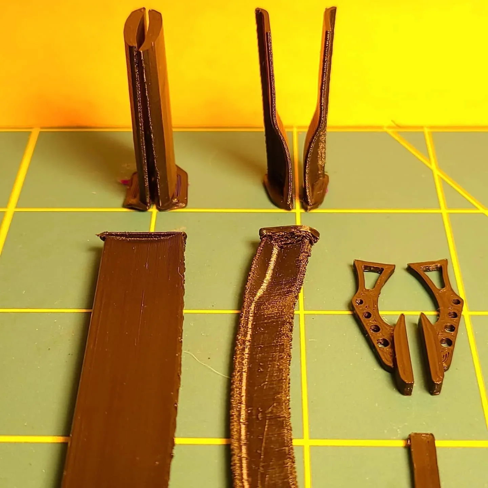

Piece / project
Piece / projectKeep the wardrobe. Replace the fitting.
A broken plastic joint became a reverse-engineering project instead of a reason to replace the whole wardrobe.
3D printing • Prototype
A reverse-engineered jar lid with a 1/4-inch pitch and a translucent-blue prototype.
The April 2021 account identifies a reverse-engineered jar lid with a 1/4-inch pitch. The photograph shows the blue prototype fitted to the jar, making the interface itself the focus of the project.
I liked the edge-glow blue filament because it made the prototypes look like three-dimensional blueprints. The visible prototype marking is left in the photograph as part of the record.
Lid reverse engineering and prototype: Michael Pytlowany. Existing jar geometry supplies the mating requirement.
The photograph is not evidence of a seal, food-contact suitability, or canning performance.
Jerky_FPV project archive
2021-04-29
KEEP EXPLORING
Piece / projectA broken plastic joint became a reverse-engineering project instead of a reason to replace the whole wardrobe.
 Piece / project
Piece / projectGlass covers and printed PETG parts came together in an early Fusion-to-print project.

Piece / projectA 1/32-scale RC spoiler became an experiment in orientation, splitting the part, and avoiding supports.
FROM THE TOOL CRIB